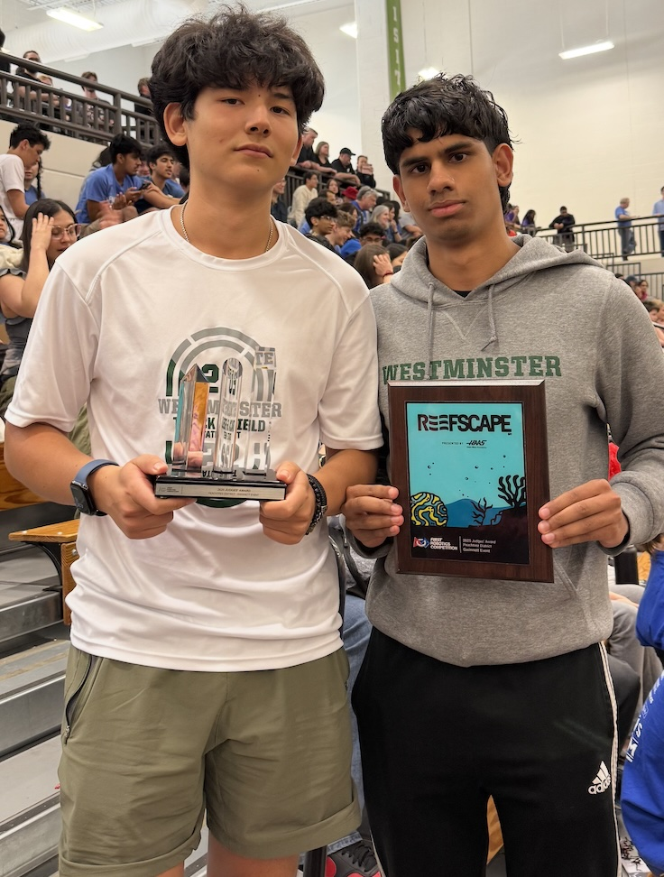
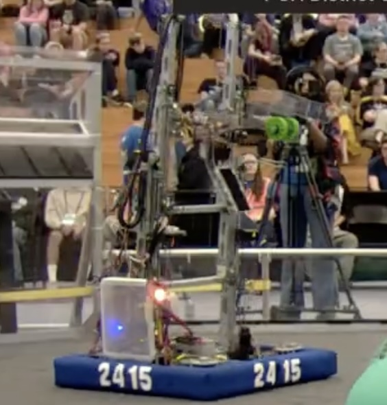

FIRST Robotics Competition (FRC)
Westminster Robotics Team | Business Team Lead & Fabrication Member (August 2021 – May 2025)

Business Operations & Regional Recognition
Directed overall business operations, marketing, and external sponsor outreach for the robotics team, securing over $10,000 in corporate and private funding to support competition fees, hardware acquisition, and community STEM programs.
Led pitch presentations to sponsors and coordinated regional event logistics, contributing to a District Championship Finalist run and earning the prestigious Judges Award along with three consecutive FIRST Creativity Awards for exceptional design and operational excellence.

Fabrication, CAD & Swerve Drive Design
Served on the hands-on manufacturing and mechanical design team, utilizing OnShape CAD software to model, prototype, and refine competitive robot sub-assemblies under strict competition build constraints.
Machined complex custom assemblies on shop tools, including the precise fabrication and assembly of a custom 4-wheel swerve drive transmission. Executed rapid hardware repairs, tolerance adjustments, and pit maintenance during high-pressure regional competitions.